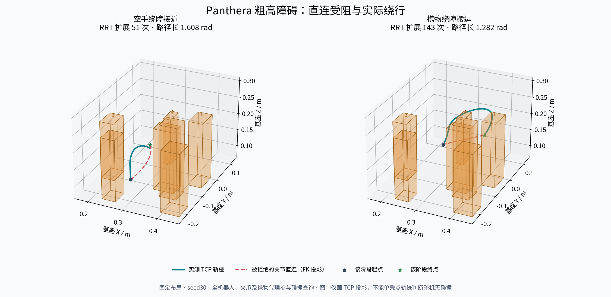
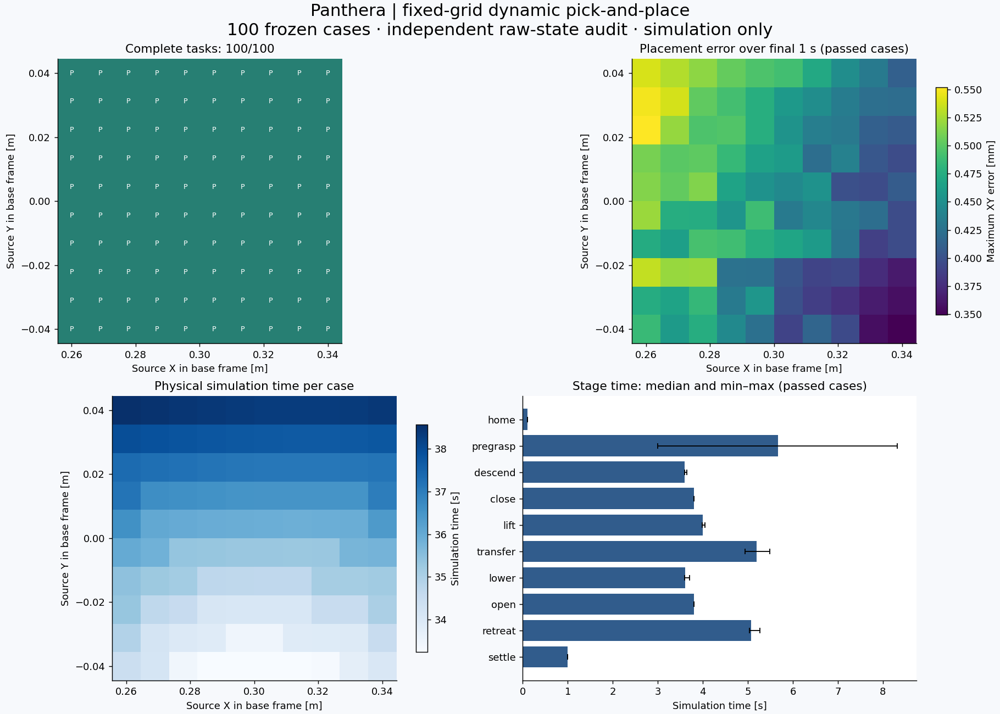

六轴机械臂 × 双指夹爪
从关节控制，
到完整抓放。
在同一套 Panthera 模型上，连接动力学、运动规划与接触操作。用真实仿真记录，呈现每一步如何执行。
固定七障碍布局，两个预设规划种子均完成任务；本片展示 seed 30。全臂、夹持特写与仿真腕部相机来自同一时刻的记录。
机器人学 · 模型与坐标
让每个算法，控制同一台机械臂。
六个关节角决定工具的位置和朝向；动力学把期望运动连接到电机力矩。
运动控制 · 保存的实测曲线
同一条轨迹，怎样跟得更准？
切换实验、关节与采样时刻，查看既有仿真数据。每个数字都对应原报告中的条件。
这些结果评价指定模型、轨迹、增益与实验条件。控制器的参数不同，不能仅凭本图推断普遍优劣或真机精度。
运动规划 · RRT-Connect
空手绕过去，带着物体再绕回来。
接近与携物搬运分别规划。路径检查覆盖整机、双指和携带物体，随后生成连续运动参考。

打开原始路径图 ↗7个固定障碍物
- 障碍高度
- 14–21 cm
- 碰撞查询裕量
- 6 mm
- 预设种子
- 30 / 31
- 完整任务
- 2 / 2
先找到可通行的关节路径，再验证实际执行。图中的 TCP 路径帮助理解绕行，完整碰撞判定使用机器人几何模型。
播放这次抓放 ↑操作任务 · 接触与监督
抓到、抬起、放稳，都有状态依据。
任务根据步进后的关节、夹爪、接触与物体状态推进，记录整段执行过程。
- 接近避障到预抓取位
- 夹持闭爪与接触确认
- 搬运抬升与携物绕障
- 释放桌面承托后开爪
- 撤离确认物体稳定
100/ 100 个完整任务
在确定性的 10×10 物体位置网格中，每个布局执行一次完整抓放。使用名义模型和已知物体位姿。
此网格实验独立于上方七障碍视频；不合并计算成功率。

查看布局与任务结果 ↗感知 · 仿真眼在手上
把相机看到的目标，变成工具的运动。
使用仿真腕部 RGB-D、已知标记几何与同曝光时刻位姿，生成机器人基座坐标系下的抓取目标。
RGB + 深度在图像中定位已知标记
相机 → TOOL → 基座用同拍位姿完成坐标变换
IK → RRT → CTC生成目标、规划并执行
视频选自声明批次的成功案例，任务批次为 1/2，四项故障输入均在运动前拒绝。采用初始视觉定位；腕部画面为仿真相机。
学习 · 独立的训练与评估链
从记录到策略，再回到物理执行。
BC、ACT、Diffusion Policy 与参考辅助 PPO，使用 Panthera 的状态、动作与控制接口。
分别评价动作预测、控制跟踪与完整任务结果。上方两段成功抓放由传统规划与控制完成；策略结果与参考基线单独记录在实验报告中。
查看学习方法与对照结果 ↗